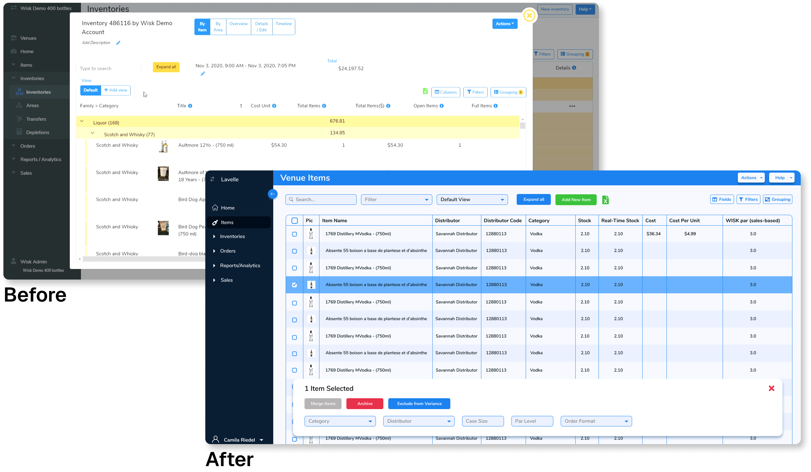
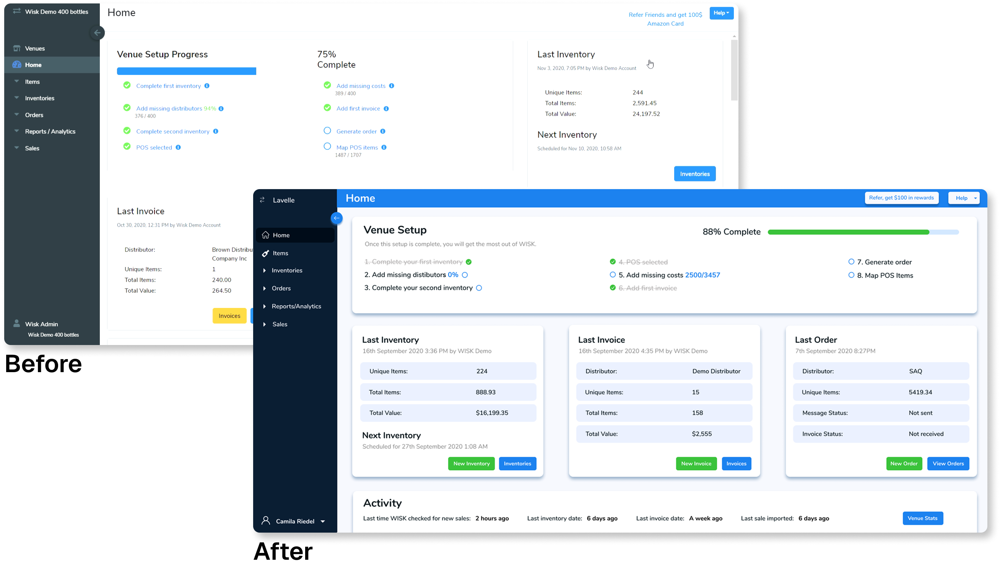
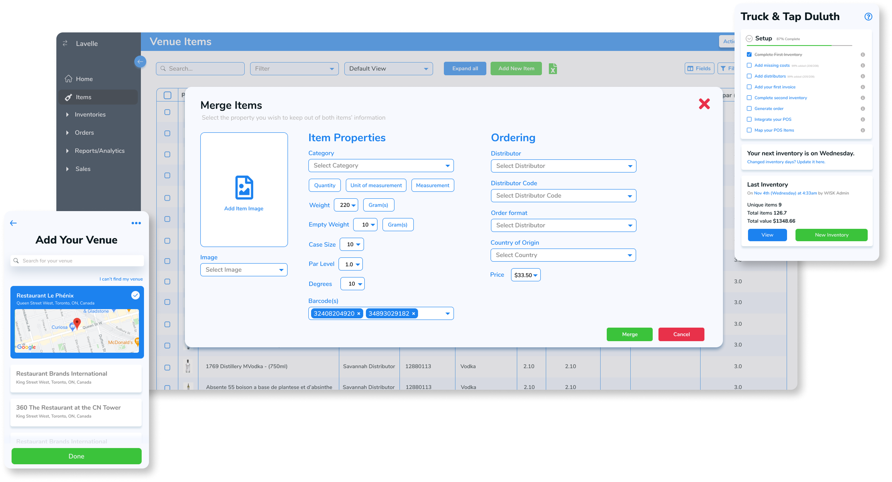
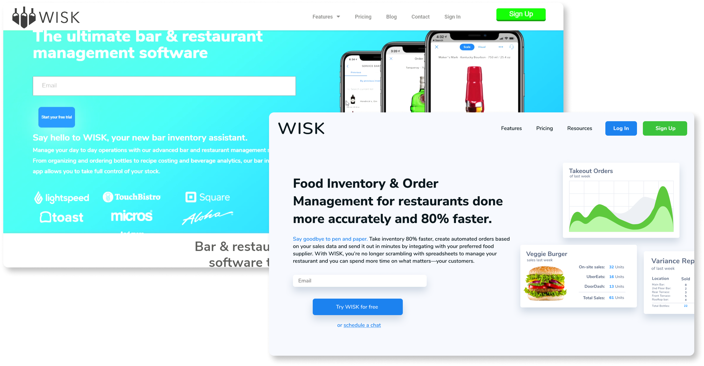
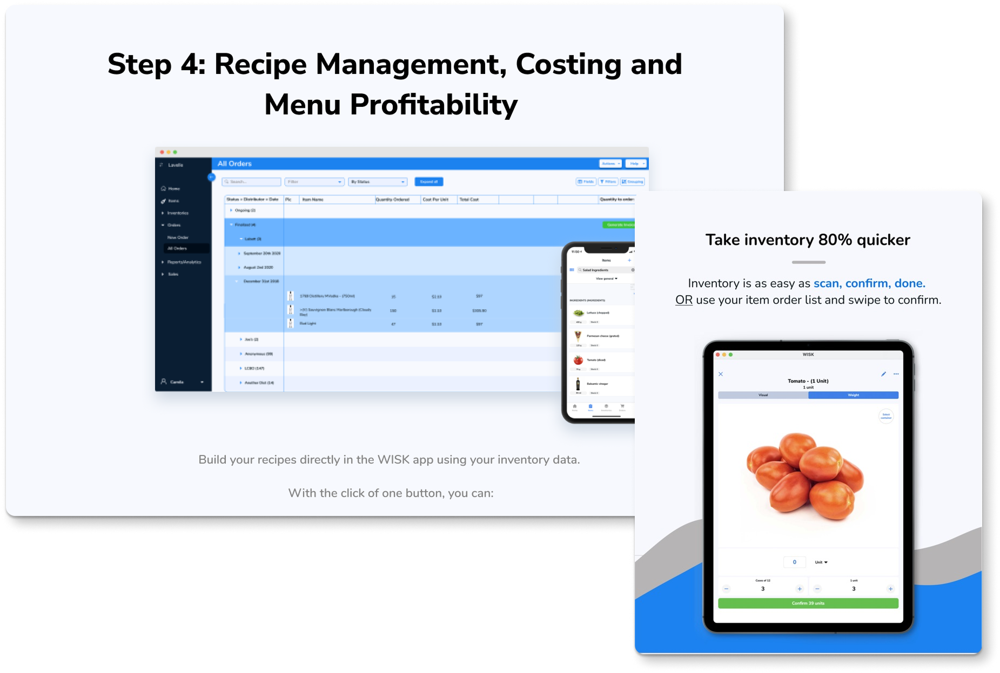
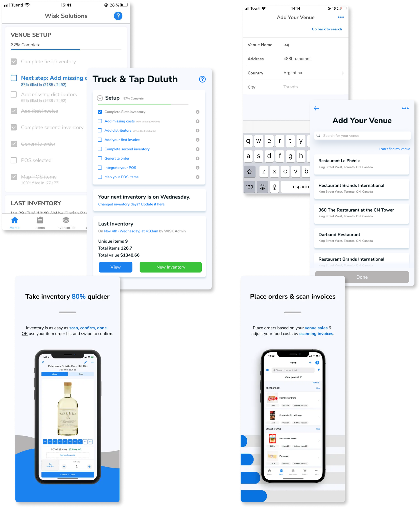

As a Design Lead at WISK, my responsibilities included a complete cross-platform redesign and rebranding, feature design, asset creation, copywriting, & maintenance of the product. Redesign efforts increased our MMR by 35% within 2 months.
When I joined, the product was in dire need of a full redesign and rebranding. All its powerful features were buried under an outdated and confusing UI. As I worked, I added new features that increased the value of WISK in the eyes of venue owners.



After our success, we created WISK FOOD, increasing company reach three-fold. I conducted primary UX Research and developed major key features, such as batch + recipe yields, median item weight, & our price suggestion tool.


WISK's most powerful tool, online & offline inventory, is possible due to the mobile app. I redesigned this as well to create better UX for both venue owners & employees. After changes and optimization, the sign-ups increased ~25% and conversion from free trials to paying users went up exponentially each month.

On top of my hands-on responsibilities, I managed a team of designers of all levels, helped instate and lead the new marketing team in projects, and found the appropiate contractors for off-site development when our in-house developers needed extra hands at work.
Let's work together!
I’m currently interested in on-site positions in the US (preferably NY or NJ), Ireland, England, or remote positions, part or full time. You can contact me via email.
© Riedel Solutions, 2025